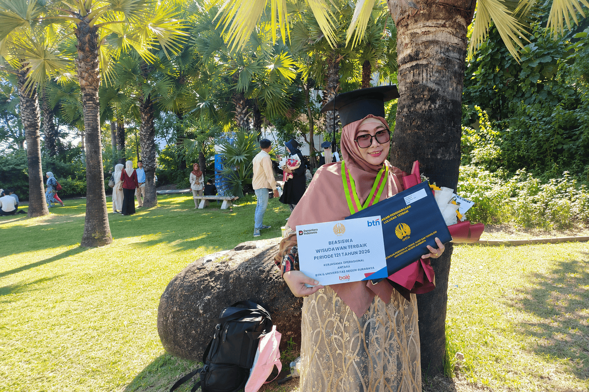

KOMPAS.com - Bencana alam banjir yang melanda Aceh pada akhir tahun 2025 turut memengaruhi perjalanan studi Nursamsu yang terdaftar sebagai mahasiswa S3 Pendidikan Sains di Universitas Surabaya (Unesa). Sebagaimana dilansir situs FMIPA Unesa, Jumat (14/8/2026) masa itu adalah salah satu pengalaman paling berat bagi Nursamsu selama berjuang menamatkan pendidikan doktoral.
Selain aktivitas sehari-hari dan kondisi fisik yang terganggu, tekanan psikologis itu nyata adanya. Apalagi laptop Nursamsu yang menyimpan berbagai data dan dokumen penelitian sempat ikut terdampak banjir. Sejumlah dokumen penting yang terkait dengan penelitian dan disertasinya pun harus diselamatkan.
Di tengah kondisi itu dosen Universitas Samudra, Aceh ini tetap berusaha memupuk semangatnya agar tetap bisa melanjutkan jalannya di jalur akademik. Terlebih ia sudah menyusuri jalan itu selama beberapa tahun sebelumnya. Hasilnya, pada 12 Agustus 2026 dia dinobatkan sebagai lulusan terbaik Program Doktoral Unesa dalam wisuda ke-121. Bahkan Nursamsu mendapat Indeks Prestasi Kumulatif (IPK) 4,00.
Agen AI ini bisa bekerja "sat-set" untuk menjawab pertanyaan pelanggan secara real-time, memberikan rekomendasi produk, membuat jadwal janji temu, mengidentifikasi calon pelanggan potensial, hingga membantu menyelesaikan transaksi penjualan
Prestasi ini membuktikan bahwa penyelesaian studi doktoral membutuhkan kemampuan untuk bertahan dari menghadapi masalah yang terjadi, konsistensi, dan lingkungan yang mendukung.
Predikat Terbaik Bukan Target Utama
Minat Nursamsu mengejar gelar S2 muncul kala dahulu Program Studi Pendidikan Biologi di kampus tempatnya mengajar sedang menjalani proses akreditasi. Dosen di Universitas Samudra lalu disarankan mengikuti pendidikan S3. Ia memilih Unesa karena sistem perkuliahannya memungkinkan dijalani secara hibrida. Skema ini membantunya tetap bisa menjalankan tugas sebagai dosen.
Pada Agustus 2024 ia mengikuti seminar proposal secara langsung di Unesa dan mulai meniti jalan dalam penyelesaian disertasi. Menurut wanita kelahiran Pangkalan Susu, pada 27 Agustus 1984 ini, menjadi wisudawan terbaik S3 Unesa bukanlah target utama yang ditetapkannya sejak awal studi.
Tak terkecuali membaca berbagai artikel ilmiah internasional juga menjadi bagian penting dalam memperkuat kemampuan akademiknya